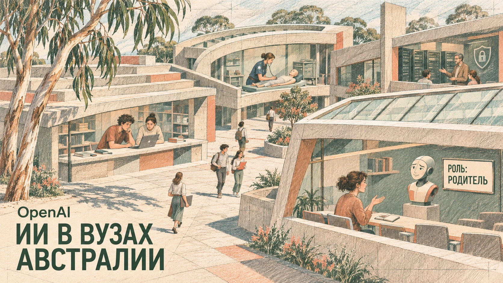

Приложения и сервисы
Пользовательские функции ChatGPT, Gemini, Claude и других приложений и сервисов.
14 ноября 2026

Google дала Gemini глаза — теперь он видит то же, что и вы
Новости ИИGoogle открыла предзаказы на умные очки Intelligent Eyewear с Gemini, камерой 12 Мп и голосовыми ответами. Samsung разработала электронику, Warby Parker и Gentle Monster — оправы; старт продаж 10 декабря, цена от $395.

WHOOP запустила соцсеть против ИИ-ботов — с проверкой живого пульса
Новости ИИWHOOP запустила в своём приложении соцсеть Humans для владельцев фитнес-браслетов, где можно общаться, публиковать Moments и делиться показателями сна и нагрузок. Компания делает ставку на подтверждённый пульс владельцев устройств.
13 ноября 2026
В приложениях Grok нашли пароли и данные пациентов
Скайнет просыпаетсяИсследователи Claroc обнаружили 35 578 созданных через Grok Build приложений, которые открывались без входа в аккаунт. В части из них оказались медицинские данные, корпоративные документы и пароли; после уведомления разработчик закрыл доступ к 24 приложениям сотрудников.
Google запустила Gemini в Apple CarPlay — теперь почту можно разбирать за рулём
Новости ИИGoogle начала мировой поэтапный запуск Gemini Live для Apple CarPlay: голосовые беседы, чтение и пересказ писем Gmail, доступ к календарю и продолжение разговора между iPhone и автомобилем. Для начала нужна актуальная версия Gemini на iPhone.

Claude теперь сам собирает таблицы с формулами прямо в чате
Новости ИИAnthropic представила Claude Sheets и Whiteboards для таблиц и командной работы, а Claude Data вывела из бета-тестирования. Новые инструменты доступны на платных тарифах с разными условиями.
Создатель Cyanogen замахнулся на Windows. В его Linux поселят ИИ
Новости ИИСооснователь Cyanogen Кирт Макмастер анонсировал KORA — Linux-ОС с общей памятью для ИИ-помощников и смысловым поиском по файлам. Запуск запланирован на 2027 год; совместимость с Windows-приложениями будет выборочной.
12 ноября 2026
10 ноября 2026

8 ноября 2026

7 ноября 2026

Meta добавила в Muse конструктор мини-приложений: достаточно описать задачу
Новости ИИMeta представила Spaces — конструктор мини-приложений внутри Muse: инструменты создаются по описанию в чате, меняются разговором, могут подключаться к сервисам и обновлять данные в фоне.

Google выпустила Gemini Omni 1.2 Flash: 15 секунд видео и правки в переписке
Новости ИИGoogle DeepMind выпустила Gemini Omni 1.2 Flash для создания 3–15-секундных видеороликов и многошаговых правок в диалоге. Генерация 720p через API стоит $0,07 за секунду; доступ зависит от сервиса и тарифа.
6 ноября 2026

Четыре университета Австралии внедряют ИИ OpenAI: от ChatGPT Edu до робота-родителя
Новости ИИOpenAI расширяет применение ChatGPT Edu и агентных инструментов в университетах Австралии. UNSW охватит более 80 тысяч студентов и сотрудников, La Trobe уже открыл доступ 3500 работников; обучение включает клинические сценарии и роботизированные диалоги.
Meta дала Muse голос и мимику: ИИ-агента теперь можно перебивать
Новости ИИMeta начала развёртывание голосовых разговоров и живых аватаров Muse в США: доступны сотни голосовых вариантов, перебивания, три режима общения и выполнение задач во время диалога.
5 ноября 2026

MyHeritage выпустила ИИ-генеалога: он ищет предков и проверяет архивы
Новости ИИMyHeritage представила GAIA — ИИ-агента для поиска предков по историческим документам и архивам с проверяемыми источниками и ручным утверждением изменений в семейном дереве.

OpenAI выпустила Images 2.6: ChatGPT теперь делает ГИФКИ!
Новости ИИOpenAI выпустила Images 2.6: ChatGPT получил создание GIF и более точное редактирование изображений, а API — варианты Flare и Sunburst.